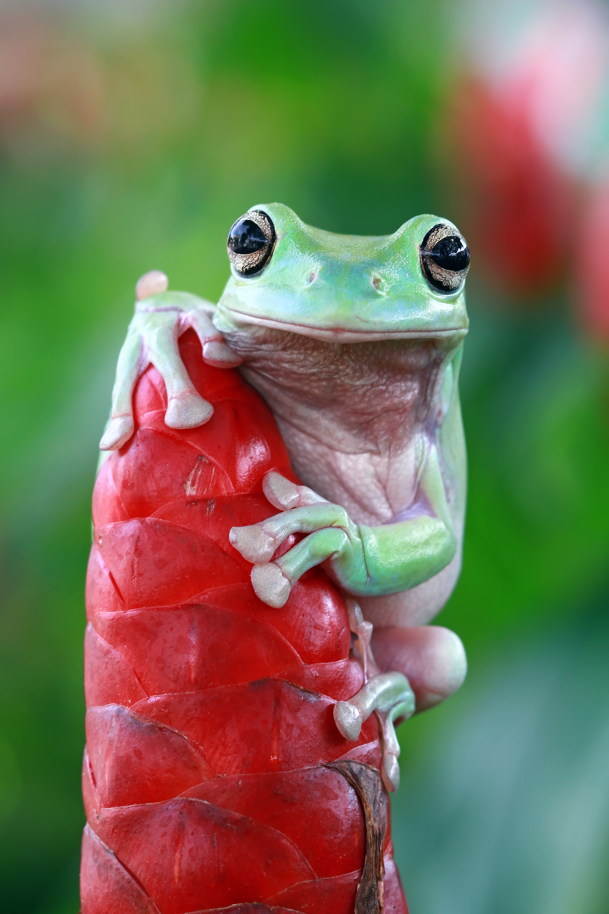

Frog Soup

Eat a bowl of frogs?
Would you ever eat a bowl of frogs? I wouldn't. Here's a recipe for gathering frogs and putting them in a bowl to enjoy looking at.
Ingredients
- A decorative bowl
- Frogs
- As many frogs as you can find
- dirt
- pretty plants
Directions
- Go outside and gather some frogs
- When you think you have enough frogs, go look for more
- When it gets dark outside you'll know you have enough frogs. Now it's time to make them a home
- Put some dirt from outside into a bowl. Make sure the dirt is moist! Decorate your bowl with some little leaves and plants
- Now try to put all your frogs in a bowl at once! Not so easy is it?? Enjoy!!!